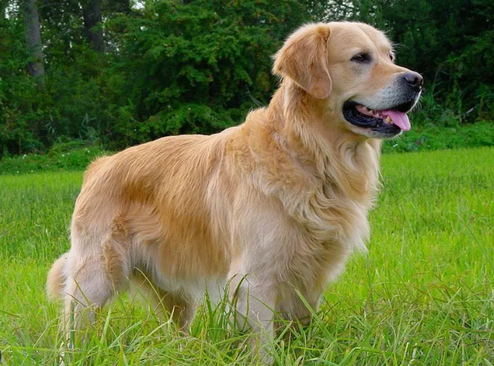
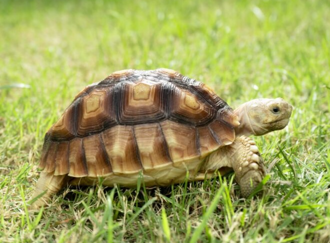

| ANIMALES> | DESCRIPCION | >IMAGEN |
|---|---|---|
| PERRO | El perro es un animal doméstico, mamífero, cuadrúpedo y carnívoro, de la familia de los cánidos, de la especie Canis lupus familiaris. Es el animal de compañía más popular del mundo, directamente descendiente del lobo gris, el Canis lupus. |
 |
| TORTUGA | tortugas terrestres, como la tortuga sulcata, habitan en regiones áridas y semiáridas. Estas tortugas están adaptadas para soportar climas extremos y tienen patas fuertes que les permiten excavar madrigueras para refugiarse del calor. Conoce la tortuga aligator, una especie terrestre que requiere cuidados esenciales para prosperar en cautiverio., |
 |
| PASTOR BELGA | El pastor belga u ovejero belga es el nombre de las cuatro razas o variedades de perros originarias de Bélgica dependiendo de la asociación cinológica que consultemos. Las cuatro razas o variedades son: Groenendael, Laekenois, Tervueren y Malinois. |
|
| MEDUSA | Las medusas son animales marinos con cuerpos gelatinosos en forma de campana con largos tentáculos pertenecientes taxonómicamente al filo Cnidaria. Estos animales son pelágicos, es decir, viven cerca de la superficie o aguas medias, evitando las profundidades y el contacto con el fondo marino. |
|
| COCODRILO | Crocodylidae es una familia de saurópsidos, arcosaurios comúnmente conocidos como cocodrilos. Incluye a catorce especies actuales. Se trata de grandes reptiles semiacuáticos que viven en las regiones tropicales de África, Asia, América y Australia. |
|